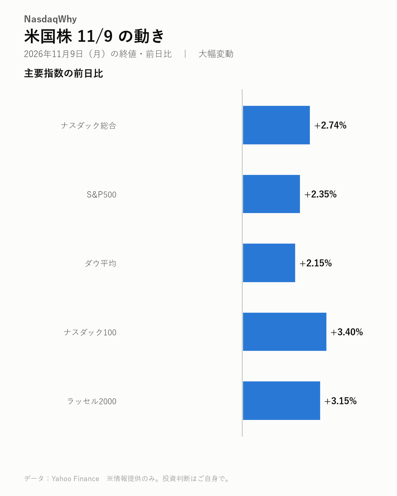
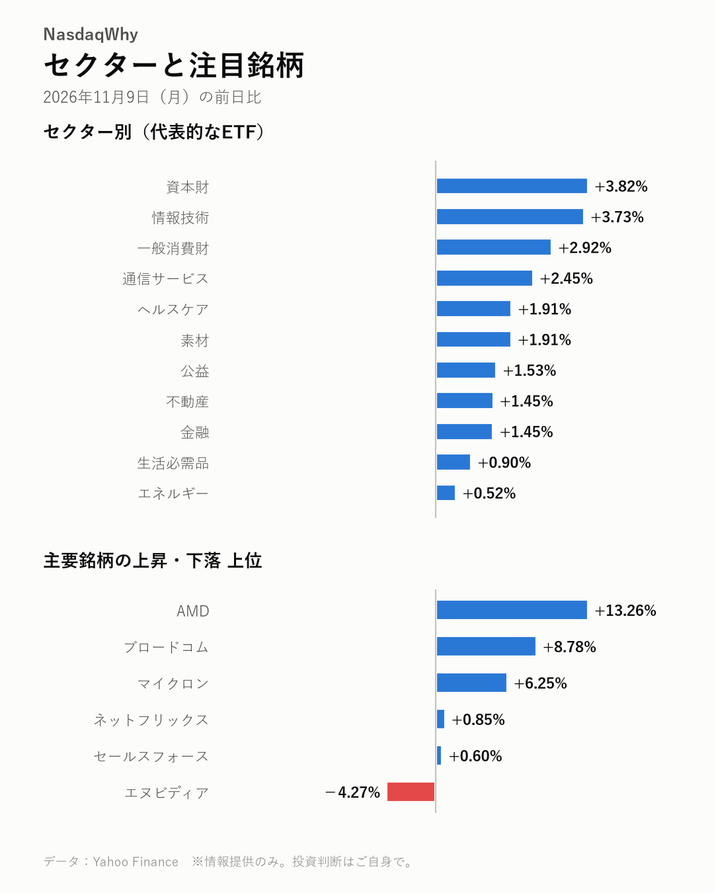

11/9の米国株：主要指数はそろって大幅高だ。先週のAI関連株急落から買い戻しが広がり、AMDなど半導体株が相場を押し上げた。
2026年11月9日（月）の米国市場（日本時間の翌朝更新） ｜ 大幅変動

主要指数
| 名前 | 終値 | 前日比 | 騰落率 |
|---|---|---|---|
| ナスダック総合 | 25,253.14 | +673.71 | +2.74% |
| S&P500 | 7,549.94 | +173.08 | +2.35% |
| ダウ平均 | 52,389.75 | +1,104.02 | +2.15% |
| ナスダック100 | 27,907.62 | +917.63 | +3.40% |
| ラッセル2000 | 2,840.81 | +86.70 | +3.15% |
なぜ動いた？
- 先週はAI関連株が急落した。その反動で買い戻しが広がり、半導体株は先週の下げの大半を取り戻した。（出典：Yahoo Finance、Quantisnow、Stocktwits）
- オッペンハイマーがAMDの投資判断を引き上げた。グーグル・クラウドもAI半導体システムにAMD製品を採用し、買いを誘った。（出典：Yahoo Finance、CNBC、Stock Titan、Investor's Business Daily）
- エヌビディアは、フアンCEOと中国のスパイとされる人物の関係を取締役会が調べ、下落した。他の半導体株は逆行高になった。（出典：Yahoo Finance、NDTV Profit、The Information）
深掘り：大きく動いた背景
米株式市場は全面高だった。ナスダック総合は+2.74%、S&P500は+2.35%、ダウ平均は+2.15%。ナスダック100は+3.40%、小型株のラッセル2000も+3.15%と大きく上げた。先週はAI関連株が急落していた。その反動の買いが幅広い銘柄に入った。 相場をけん引したのはAMDだ。株価は+13.26%と急伸した。オッペンハイマーは投資判断を引き上げ、データセンター向け売上高の大幅な伸びを見込む。グーグル・クラウドは、初のAI半導体システムにAMDのプロセッサーを採用した。格上げと大口顧客の獲得が重なり、買いが膨らんだ。 エヌビディアは逆行安となり、-4.27%。取締役会は、フアンCEOと中国のスパイとされる人物との関係を調べている。それでも半導体株全体の売りにはつながらなかった。ブロードコムは+8.78%、マイクロンは+6.25%、インテルは+5.49%と上げた。バーチャートは、AMDの上昇はAI需要に問題がないことを示すとの見方を示した。 マーケットウォッチによると、先週の半導体株の急落は行き過ぎだったとみるアナリストがいる。ただ、慎重な姿勢を崩さない向きも残る。
セクター
全セクターが上昇した。上げを主導したのは資本財の+3.82%と情報技術の+3.73%だ。一般消費財と通信サービスも堅調だった。エネルギーは+0.52%と小幅高にとどまった。
- 騰落率の高い順：資本財 +3.82%、情報技術 +3.73%、一般消費財 +2.92%
- 騰落率の低い順：エネルギー +0.52%、生活必需品 +0.90%、金融 +1.45%

注目銘柄
AMDは+13.26%と急伸した。格上げとグーグルとの取引が買い材料だ。ブロードコムは+8.78%、マイクロンは+6.25%と続いた。エヌビディアはCEOを巡る調査が重荷になり、-4.27%。
- 上昇：AMD（AMD）+13.26%、ブロードコム（AVGO）+8.78%、マイクロン（MU）+6.25%
- 下落：エヌビディア（NVDA）-4.27%、セールスフォース（CRM）+0.60%、ネットフリックス（NFLX）+0.85%
半導体トピック
- グーグル・クラウドが初のAI半導体システムにAMDのプロセッサーを採用（Stock Titan、Benzinga）
- アプライド・マテリアルズ株がAMDやマイクロンと並んで大きく上昇（TipRanks、Investing.com）
- TSMCやSK hynix、サムスン電子などアジアの半導体株も上昇（Yahoo Finance）
関連市場
| 名前 | 終値 | 前日比 | 騰落率 |
|---|---|---|---|
| 米10年債利回り | 4.864% | +0.005pt | ― |
| ドル円 | 157.92 | +0.42 | +0.27% |
| 金先物 | 4,147.50 | +72.60 | +1.78% |
| 原油先物(WTI) | 86.98 | -3.85 | -4.24% |
| ビットコイン | 74,899.53 | -847.40 | -1.12% |
米10年債利回りは4.864%とほぼ横ばい。ドル円は157.92円と円安に振れた。金先物は+1.78%。原油先物は-4.24%と大きく下げ、ビットコインも-1.12%と軟調だった。
今後の注目
- エヌビディア取締役会によるCEO調査の行方（Yahoo Finance）
- アプライド・マテリアルズやマイクロンなどの決算（Yahoo Finance）
- 12/9（水） FOMC（米連邦公開市場委員会）の金融政策発表（公式発表）
出典（見出し）
- Yahoo Finance：Dow, S&P 500, Nasdaq Futures Rebound After Sharp AI Selloff Last Week: NVDA, AMD, VIR, SNDK In Focus（記事）
- Quantisnow：AMD jumps 10% in morning trading as chip stocks win back three-fifths of last week's rout（記事）
- Stocktwits：AMD, AVGO, INTC, MU: Chip Stocks Inch Higher As Investors Look Past Midterms-Led Selloff, Nvidia Controversy（記事）
- Yahoo Finance：Oppenheimer lifts AMD to Outperform, sees data center sales more than doubling（記事）
- CNBC：AMD shares are primed for a comeback, says Oppenheimer（記事）
- Stock Titan：Google Cloud's first AI chip system uses AMD processors to help protect sensitive data as it runs（記事）
- Investor's Business Daily：AMD Stock Rises On Google Cloud Deal, Wall Street Upgrade（記事）
- Yahoo Finance：NVIDIA Falls 5% as Board Probes Jensen Huang’s Ties to Alleged Chinese Spy; AMD Rises 4%, Intel Holds Steady（記事）
- NDTV Profit：AMD, Broadcom, Micron Rally Up To 8% As Chip Stocks Defy Nvidia Rout（記事）
- The Information：Nvidia Shares Fall 6.6% as Broadcom and AMD Rise（記事）
- Benzinga：AMD Joins Google AI Chip Push Against Nvidia - Advanced Micro Devices (NASDAQ:AMD)（記事）
- TipRanks：AMD, Micron, and Applied Materials Stocks Are Soaring Today. What’s Behind the Rally?（記事）
- Investing.com：AMD, Applied Materials among market cap stock movers on Monday（記事）
- Yahoo Finance：TSMC, SK Hynix, Samsung: Asian Chip Stocks Rise Even As Nvidia CEO Jensen Huang’s Controversy Tests Investor Confidence（記事）
- Yahoo Finance：Applied Materials, Cisco, Berkshire Hathaway, Nvidia, Micron and Alphabet are part of Zacks Earnings Preview（記事）
データ：Yahoo Finance